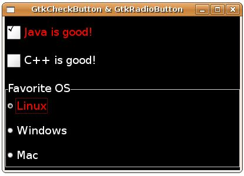

GtkStyle是GTK與GDK之間一個重要的抽象層，它允許您自訂元件的外觀樣式，而不用直接親自處理GDK的繪圖，GtkStyle為GtkWidget的成員之一：
typedef struct {
/* The style for the widget. The style contains the
* colors the widget should be drawn in for each state
* along with graphics contexts used to draw with and
* the font to use for text.
*/
GtkStyle *GSEAL (style);
....
} GtkWidget;
/* The style for the widget. The style contains the
* colors the widget should be drawn in for each state
* along with graphics contexts used to draw with and
* the font to use for text.
*/
GtkStyle *GSEAL (style);
....
} GtkWidget;
如說明文件中所稱的，GtkStyle包括了元件的顏色資訊，以及每個狀態下如何繪製的訊息：
typedef struct _GtkStyle GtkStyle;
struct _GtkStyle {
GtkStyleClass *klass;
GdkColor fg[5];
GdkColor bg[5];
GdkColor light[5];
GdkColor dark[5];
GdkColor mid[5];
GdkColor text[5];
GdkColor base[5];
GdkColor black;
GdkColor white;
GdkFont *font;
GdkGC *fg_gc[5];
GdkGC *bg_gc[5];
GdkGC *light_gc[5];
GdkGC *dark_gc[5];
GdkGC *mid_gc[5];
GdkGC *text_gc[5];
GdkGC *base_gc[5];
GdkGC *black_gc;
GdkGC *white_gc;
GdkPixmap *bg_pixmap[5];
/* private */
gint ref_count;
gint attach_count;
gint depth;
GdkColormap *colormap;
GtkThemeEngine *engine;
gpointer engine_data;
GtkRcStyle *rc_style;
GSList *styles;
};
struct _GtkStyle {
GtkStyleClass *klass;
GdkColor fg[5];
GdkColor bg[5];
GdkColor light[5];
GdkColor dark[5];
GdkColor mid[5];
GdkColor text[5];
GdkColor base[5];
GdkColor black;
GdkColor white;
GdkFont *font;
GdkGC *fg_gc[5];
GdkGC *bg_gc[5];
GdkGC *light_gc[5];
GdkGC *dark_gc[5];
GdkGC *mid_gc[5];
GdkGC *text_gc[5];
GdkGC *base_gc[5];
GdkGC *black_gc;
GdkGC *white_gc;
GdkPixmap *bg_pixmap[5];
/* private */
gint ref_count;
gint attach_count;
gint depth;
GdkColormap *colormap;
GtkThemeEngine *engine;
gpointer engine_data;
GtkRcStyle *rc_style;
GSList *styles;
};
您可以使用GtkWidget的gtk_widget_style_get()來取得GtkStyle，使用gtk_widget_set_style()函式設定GtkStyle等，一個使用的範例在 GtkColorButton 與 GtkColorSelectionDialog 可以找到，在GtkStyle定義中您可以發現的是，它們都是有五個元素的陣列，這是因為可以區分為五個不同狀態下的顯示顏色：
- GTK_STATE_NORMAL：一般操作狀態
- GTK_STATE_ACTIVE：活動狀態，例如按下按鈕
- GTK_STATE_PRELIGHT：若元件可以回應滑鼠按下，而滑鼠越過元件的狀態
- GTK_STATE_SELECTED：被選擇的狀態
- GTK_STATE_INSENSITIVE：指出不回應使用者動作的狀態
GtkStyle的樣式可以撰寫在一個資源檔案中，例如寫一個.rc檔如下：
- styles.rc
style "widgets" {
fg[ACTIVE] = "#FF0000"
fg[SELECTED] = "#003366"
fg[NORMAL] = "#FFFFFF"
fg[PRELIGHT] = "#FFFFFF"
fg[INSENSITIVE] = "#999999"
bg[ACTIVE] = "#003366"
bg[SELECTED] = "#FFFFFF"
bg[NORMAL] = "#000000"
bg[PRELIGHT] = "#003366"
bg[INSENSITIVE] = "#666666"
}
style "labels" = "widgets" {
font_name = "Algerian 14"
}
style "buttons" = "widgets" {
GtkButton::inner-border = { 10, 10, 10, 10 }
}
style "radios" = "buttons" {
GtkCheckButton::indicator-size = 10
}
style "checks" = "buttons" {
GtkCheckButton::indicator-size = 25
}
class "GtkWindow" style "widgets"
class "GtkLabel" style "labels"
class "GtkCheckButton" style "checks"
class "GtkRadioButton" style "radios"
class "Gtk*Button" style "buttons"語法上非常簡單，每個樣式可有一個名稱，並指定要修改的屬性，樣式之間還可以繼承，例如上面的設定中，"labels" = "widgets"表示"labels"繼承 "widgets"的屬性設定，最底下是樣式名稱的取名，而最後一行，"Gtk*Button"表示設定Gtk開頭而Button結尾的類別名稱都符合。
可以將這個.rc檔案套用至 GtkCheckButton 與 GtkRadioButton 的範例中，只要在gtk_init()後寫下gtk_rc_parse()函式並指定樣式檔案：
....
gtk_init(&argc, &argv);
gtk_rc_parse("styles.rc");
....
重新編譯並執行程式，一個執行範例如下所示：
